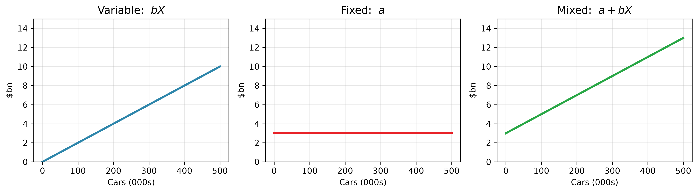

Today is Part B — “Tuesday: the price war and the invisible split”: the forwarded price-cut headline, eight real Compustat quarters, and the finance team’s regression. It is read during the Tesla hands-on; at the end of the session groups work all seven questions in order (B1–B4, ▸ B5, B6, ▸ B7), and the closing discussion takes every question, in order, with its full solution. Every part is on Moodle; each day’s part is posted here after its lecture.
TipOpening quiz — Session 1 + Class 1
Four questions on yesterday — the lecture and the class. One best answer each; write your letters (or vote on Menti in the room), then check the reveal. Formative only — not graded, no effect on your grade.
Which of the following best describes management accounting, as distinct from financial accounting?
A. It must follow IFRS so that managers in different firms can compare their figures.
B. It focuses on reporting last period’s results faithfully to the firm’s shareholders.
C. It is required by law and audited, although managers may also use it for internal decisions.
D. It is prepared in whatever format helps managers plan, decide and control, and looks forward.
A hotel’s restaurant employs a head chef on a fixed annual salary; the chef works only in that restaurant. How should the salary be classified?
A. A direct cost of the restaurant, but an indirect cost of a single meal served.
B. An indirect cost of the restaurant, but a direct cost of a single meal served.
C. A direct cost of both, because the chef works exclusively in that restaurant.
D. An indirect cost of both, because a fixed salary can never be a direct cost.
A student society is planning its end-of-course boat party. The boat hire is a fixed £6,000 whatever the attendance, and catering costs £15 per guest. Last year 200 guests attended, and the party cost £45 per guest. This year 300 guests are expected. What total cost should the society budget? A. £4,500 B. £10,500 C. £13,500 D. £19,500
Aylin opens a street-food stall. She puts in £9,000 of her own cash and the stall borrows £4,000 from a bank. The stall then buys a griddle for £2,500, paying cash. After these three events, what are the stall’s total assets? A. £9,000 B. £10,500 C. £13,000 D. £15,500
NoteReveal
D — internal, flexible in format, forward-looking; it exists to help managers plan, decide and control. The law requires financial accounting; management accounting is done because it is useful.
A — direct/indirect depends on the cost object: the salary is traceable to the restaurant as a department, but is shared across every meal.
B — budget in totals: £6,000 + £15 × 300 = £10,500. The £45 per-guest figure was only ever true at 200 guests — “fixed cost per unit” slides with volume.
C — assets = £9,000 + £4,000 = £13,000; the griddle purchase just swaps cash for equipment, so A = L + E is unchanged.
In question 3 we were told the £6,000/£15 split. Tesla’s accounts tell us no such thing — recovering that split from raw totals is today’s whole problem. ↓
NoteFrom Session 1 → today
You learned that total cost is a linear cost function:
\[\text{Total Cost} = \underbrace{\text{Fixed Cost}}_{a} + \underbrace{\text{Variable Cost per unit}}_{b}\times \underbrace{\text{Volume}}_{X} \qquad (Y = a + bX)\]
In Session 1 we were handed\(a\) and \(b\). In the real world nobody hands them to you — you see only total cost and volume each period. Today: find \(a\) and \(b\) from data, then use them to decide.
u = np.linspace(0, 500_000, 100)var_s =20_000* u /1e9# $20k/car, in $bn — same illustrative numbers as Session 1fix_s = np.full_like(u, 3.0) # $3bn fixedfig, axs = plt.subplots(1, 3, figsize=(12, 3.4))for ax_, y, t, c inzip(axs, [var_s, fix_s, var_s + fix_s], ['Variable: $bX$', 'Fixed: $a$', 'Mixed: $a + bX$'], ['#2E86AB', TESLA_RED, '#28A745']): ax_.plot(u/1000, y, color=c, lw=2.5); ax_.set_title(t, fontsize=13) ax_.set_xlabel('Cars (000s)'); ax_.set_ylabel('$bn'); ax_.set_ylim(0, 15); ax_.grid(True, alpha=.3)plt.tight_layout(); plt.show()

Figure 1: The three shapes from Session 1 — variable (bX), fixed (a), and their sum, a mixed cost (a + bX). Same illustrative round numbers as Session 1, not Tesla’s actuals.
A cost with a fixed part and a variable part is a mixed cost — and most real cost lines, Tesla’s quarterly COGS included, are mixed. The mixed line is\(Y = a + bX\): estimation means recovering \(a\) and \(b\) from points scattered around it.
The price war
In April 2024, weeks after reporting its first year-on-year delivery decline since the pandemic (Q2 2020), Tesla cut prices again:
Tesla cuts U.S. prices of Models Y, X, S by $2,000 — CNBC, 20 April 2024. The base Model Y fell to $42,990 — roughly $23,000 below the cheapest Model Y’s January 2023 sticker (then the $65,990 Long Range), after a single $13,000 cut that month and repeated smaller cuts since (like-for-like, the Long Range is down ~$18,000 to $47,990).
Every analyst asked the same thing:
If Tesla sells more cars at a lower price, does profit go up or down?
You can’t answer that without knowing how much of Tesla’s cost is fixed and how much is variable — because volume spreads fixed costs but adds variable ones. And here’s the catch: Tesla never publishes “our fixed cost is $X.” All you get is total cost and volume, period by period. Recovering the split from that is cost estimation.
NoteDiscussion
Tesla’s quarterly cost rises when it makes more cars. How would you separate the part that’s always there from the part that’s per-car, using only the totals? Bring back a rule of thumb.
The high-low method
The simplest rule: take the period with the highest activity and the one with the lowest, and assume the cost difference between them is purely variable.
From the table above: which two months does high-low use, and which ten does it ignore? Compute \(b\) (variable cost per unit) by hand, then \(a\) from the high month.
▸ Recompute \(a\) from the low month instead. You must get the same number. Why?
NoteReveal
hi = demo.loc[demo['units'].idxmax()]lo = demo.loc[demo['units'].idxmin()]b = (hi['total_cost'] - lo['total_cost']) / (hi['units'] - lo['units'])a = hi['total_cost'] - b * hi['units']print(f"High month: {hi['month']} → {hi['units']:.0f} units, cost {hi['total_cost']:,.0f}")print(f"Low month: {lo['month']} → {lo['units']:.0f} units, cost {lo['total_cost']:,.0f}")print("-"*48)print(f"Variable cost per unit b = {b:,.2f}")print(f"Fixed cost a = {a:,.0f}")print(f"\nCost function: Total Cost = {a:,.0f} + {b:,.1f} × units")
High month: Aug → 110 units, cost 105,000
Low month: Feb → 30 units, cost 40,000
------------------------------------------------
Variable cost per unit b = 812.50
Fixed cost a = 15,625
Cost function: Total Cost = 15,625 + 812.5 × units
It uses only Aug (110 units) and Feb (30 units); the other ten months are thrown away. (▸ answer: \(a\) comes out identical from either month, because high-low forces the line exactly through both extreme points.)
WarningThe weakness, in one line
High-low uses 2 of 12 data points and throws the rest away. If either extreme is an unusual month, the whole estimate is wrong — and it can’t tell you how trustworthy the line is. That’s the motivation for what comes after the break.
(Natural break point — ~10 minutes.)
Regression: the best line through all the dots
High-low listens to two months. Regression listens to all of them. The idea, before any formula:
Draw the single straight line that sits as close as possible to every point at once — specifically, the line that makes the total squared distance from the points to the line as small as possible.
That line has the same two pieces we care about: an intercept (where it crosses at zero volume → the fixed cost) and a slope (the rise per extra unit → the variable cost per unit). The technical name for fitting it this way is ordinary least squares (OLS) regression — “least squares” because it minimises those squared distances.
Run it — in Excel and in Python
NoteYour turn — run it in Excel
You have the workbook — ac101-s2-cost-estimation.xlsx — which holds this same demo data and builds high-low, regression and CVP as live formulas (change a number, watch break-even move). Run the regression yourself while, at the front, we fit the same line in Python — same data, so the two must meet at the same answer.
Put units in one column, total_cost in the next (the workbook has them ready).
Data → Data Analysis → Regression (enable the Analysis ToolPak once — Windows: File → Options → Add-ins; Mac: Tools → Excel Add-ins). Set Y = cost, X = units → OK.
Read the output: Intercept = fixed cost, the units coefficient = variable cost per unit, R Square = fit, and the p-values for significance.
One-cell shortcut: =LINEST(cost_range, units_range, TRUE, TRUE) returns slope, intercept, R² and more.
slope, intercept, r, p, se = stats.linregress(demo['units'], demo['total_cost'])print("OLS REGRESSION (monthly demo data)")print("="*46)print(f"Cost function: Total Cost = {intercept:,.0f} + {slope:,.1f} × units")print(f"\n Intercept (a) = fixed cost : {intercept:,.0f}")print(f" Slope (b) = variable cost / unit : {slope:,.1f}")print(f" R² = fit (var. explained) : {r**2:.3f} ({r**2*100:.0f}%)")print(f" p-value = trust the slope? : {p:.4f} ({'yes, < 0.05'if p <0.05else'no'})")
OLS REGRESSION (monthly demo data)
==============================================
Cost function: Total Cost = 23,310 + 737.4 × units
Intercept (a) = fixed cost : 23,310
Slope (b) = variable cost / unit : 737.4
R² = fit (var. explained) : 0.841 (84%)
p-value = trust the slope? : 0.0000 (yes, < 0.05)
Read it in plain words: fixed cost ≈ the intercept; each extra unit adds ≈ the slope; R² says how much of the variation in cost the line explains; p < 0.05 says the pattern is unlikely to be just noise (with few data points, treat any estimate as indicative, not definitive).
The reveal: the two methods disagree
NoteCommit to an answer
Commit before we draw it: will the OLS line land above or below your high-low line — a higher fixed cost or a lower one? Pick one, say why — then we reveal.
Figure 2: High-low listens to 2 points; OLS listens to all 12 — so they give different lines.
The two lines genuinely differ — and high-low’s depends entirely on whether those two circled months were typical. That fragility is why, with real data, we reach for regression.
Now you: estimate Tesla’s cost function
Tesla’s numbers bring real-world complications: quarterly figures in the billions rather than tidy monthly units, only 8 observations — and one genuine judgement call before you run anything.
NoteDiscussion
The file has both production (cars built) and deliveries (cars sold). Which is the right driver for COGS — the activity that causes the cost, the \(X\) in our line — and why?
NoteReveal
COGS is the cost of cars sold, so we estimate it against deliveries — cars built but unsold sit in inventory, not in COGS.
▸ After running the cell, swap deliveries for production and rerun: the fit collapses (R² ≈ 0.15 vs 0.84). The data agrees with the logic.
▸ And the sharper trap runs the other way: a high R² need not mean the right driver. In the case, Part B’s question B6 hands you a driver that fits COGS better than deliveries and is still the wrong one.
q = pd.read_csv('../../data/raw/tesla_quarterly.csv')q = q[q['year'].isin([2023, 2024])].copy() # 8 quarters with complete financials# Driver = deliveries (units sold), cost = COGS in $mts, ti, tr, tp, tse = stats.linregress(q['deliveries'], q['cogs_millions'])print("TESLA COGS vs DELIVERIES, 2023–24 (8 quarters)")print("="*50)print(f" Fixed cost (intercept) : ${ti:,.0f} m per quarter")print(f" Variable cost per car : ${ts*1e6:,.0f}")print(f" R² : {tr**2:.3f}")print(f" p-value : {tp:.4f}")
TESLA COGS vs DELIVERIES, 2023–24 (8 quarters)
==================================================
Fixed cost (intercept) : $4,295 m per quarter
Variable cost per car : $31,951
R² : 0.842
p-value : 0.0013
(COGS here is Tesla’s total cost of revenues — vehicles plus energy & services, ex-depreciation — against cars delivered; like the revenue side below, a labelled proxy.)
Figure 3: Tesla: quarterly COGS against deliveries, with the fitted line.
NoteWhat the Tesla fit is telling you (read after running)
The fit is decent — an R² around 0.84 with only 8 quarters — and real costs also move with input prices, model mix and one-off items, not deliveries alone. That’s normal. The intercept is an estimate of the fixed portion of production cost (factories, salaried staff) — an extrapolated intercept, so treat it as indicative; the slope estimates the variable cost of one more car. We now have a usable cost function — which is all we need for the decision.
Then, still in the jump-out: read Part B of Five Days at Fremont — Tuesday at Fremont re-tells today’s price war, with the finance team’s regression as Exhibit B-2, exhibits included, no answers. Its questions are worked in groups at the end of the session, and every one is discussed with its full solution.
ImportantMisconception check
“The fixed/variable label is just given.” No — in Session 1 it was given to teach the idea; in the real world you estimate it, and reasonable people get slightly different splits. That uncertainty is exactly why we report R² and test significance.
(Natural break point — ~10 minutes.)
Cost-Volume-Profit: when do we make money?
We have a cost function. Now the question Tesla actually cares about: at what sales volume do we cover the cost of making the cars?
The plain-English picture, before any formula:
Every car sold brings in its price and costs its variable cost. The money left over — price minus variable cost — gets thrown at a big pile of fixed cost. You make zero profit until the pile is gone. The car that finishes off the pile is break-even. Every car after that, its leftover is pure profit.
That “leftover per unit” has a name, and it’s worth knowing precisely:
TipDefine it well
Contribution margin (CM) = selling price − variable cost per unit. It is not profit — it is what each unit contributes toward covering fixed costs (and, once they’re covered, toward profit).
Break-even is where total contribution exactly fills the fixed-cost pile: \[\text{CM}\times Q^{*} = \text{Fixed Cost}\qquad\Longrightarrow\qquad Q^{*}=\frac{\text{Fixed Cost}}{\text{CM}}\] So \(Q^{*}=\text{FC}/\text{CM}\) isn’t an arbitrary formula — it literally asks “how many contributions does it take to fill the pile?”
Two relatives you’ll meet in a moment:
CM ratio = CM ÷ price — the contribution in each £1 of revenue. So break-even revenue = Fixed Cost ÷ CM ratio: “how much revenue until the pile is gone?”
Margin of safety = (actual − break-even) ÷ actual — how far sales can fall before you slip below break-even.
ImportantMisconception checks (say these out loud)
CM ≠ profit. A €2,000 contribution margin is not €2,000 profit — the fixed-cost pile comes first.
Why FC/CM? Division here means “how many times does one unit’s contribution fit into the fixed pile.”
Don’t invent a “fixed cost per unit.” Recall Session 1’s unit-cost trap: fixed cost is flat in total; per-unit fixed cost slides with volume. Add a per-unit fixed cost to variable cost and you’ll get nonsense.
Warm-up (vivid → drill)
The Dior bag.Milan probes into Dior suppliers’ illegal labour unsettle luxury sector (Financial Times, 29 June 2024): an Italian court found a supplier assembled a “Made in Italy” Dior handbag for ~€53 — a bag retailing at about €2,600–2,700. The €53 covers assembly only, materials excluded. The rest is our illustrative scenario, not Dior’s numbers: suppose the all-in variable cost (leather, logistics, selling) ≈ €700, so CM ≈ €2,000; if the bag line carries ~€10m of fixed cost (also assumed), break-even = €10,000,000 / €2,000 = 5,000 bags. Same structure, luxury skin. (And the other ~98% of the sticker? It buys the marble flagships, the advertising — and the word Dior on the dust bag.)
NoteYour turn (then check)
Dresses by Mary sells dresses at £70 each; each dress is bought in for £32, with another £10 of variable cost per dress; fixed costs are £84,000 a year. Find: (1) the CM per dress, (2) break-even in dresses, (3) break-even in revenue (use the CM ratio).
fixed_q = ti # $m fixed per quarter (from regression)var_unit = ts *1e6# $ variable per carrev_2024 = q.loc[q['year'] ==2024, 'revenue_millions'].sum()del_2024 = q.loc[q['year'] ==2024, 'deliveries'].sum()# Total revenue per car delivered — ABOVE the Model Y sticker (~$43k) because# it spreads energy, services and regulatory-credit revenue over the cars. A proxy.rev_per_car = rev_2024 *1e6/ del_2024cm_unit = rev_per_car - var_unitbe_units = fixed_q *1e6/ cm_unit # break-even cars per quarteractual_q = del_2024 /4mos = (actual_q - be_units) / actual_qprint("TESLA CVP (per quarter, 2024)")print("="*46)print(f" Revenue per car delivered* : ${rev_per_car:,.0f}")print(f" Variable cost per car : ${var_unit:,.0f}")print(f" Contribution per car : ${cm_unit:,.0f}")print(f" Fixed cost per quarter : ${fixed_q:,.0f} m")print("-"*46)print(f" Break-even volume : {be_units:,.0f} cars / quarter")print(f" Actual avg deliveries (2024) : {actual_q:,.0f} cars / quarter")print(f" Margin of safety : {mos:.0%}")
TESLA CVP (per quarter, 2024)
==============================================
Revenue per car delivered* : $54,599
Variable cost per car : $31,951
Contribution per car : $22,648
Fixed cost per quarter : $4,295 m
----------------------------------------------
Break-even volume : 189,661 cars / quarter
Actual avg deliveries (2024) : 447,306 cars / quarter
Margin of safety : 58%
* Revenue per car delivered = total revenue ÷ cars delivered — it includes energy, services & regulatory-credit revenue, so it sits above the ~$43k Model Y sticker. A labelled proxy, not a selling price.
Figure 4: Tesla CVP: revenue vs total cost, with break-even and actual volume.
NoteResolution — back to the opening question
Tesla sits well above its COGS break-even, with a large margin of safety. So the price cut, by itself, doesn’t sink them — as long as the lower price brings enough extra volume to keep them above that break-even line.(This is the break-even for production costs — Tesla still has to cover SG&A and R&D on top before real operating profit — but the price-war debate was exactly about this per-car production economics.) We’ve now quantified the threshold the whole “price war” debate was really about. That is what cost estimation buys you: not certainty, but a number to argue over.
Key takeaways
NoteKey takeaways
In the real world the fixed/variable split is estimated, not given.
High-low uses two points — quick, fragile. Regression (OLS) uses all of them and tells you how well the line fits (R²) and whether to trust it (p-value). Same idea in Excel and Python.
Contribution margin = price − variable cost per unit. It feeds the fixed-cost pile; it is not profit.
Break-even\(Q^{*}=\text{FC}/\text{CM}\) — “how many contributions fill the pile.”
A price cut survives only if the extra volume keeps you above break-even.
NoteTesla case — Part B
In the lecture we worked Part B — “Tuesday: the price war and the invisible split” of the week-long Tesla case, Five Days at Fremont (also on Moodle) — read during the Tesla hands-on, then all seven questions in groups, in order: B1 (the driver), B2 (high-low on the eight quarters), B3 (high-low vs OLS — which line goes to the CFO), B4 (contribution, break-even, margin of safety — does the cut sink Tesla?), ▸ B5 (sensitivity and sticky costs), B6 (the driver shortlist), ▸ B7 (forecasting at the delivery guidance). Every solution was then discussed in order; ▸ B7 carries on in the class.
Coming next → Session 3
We’ve treated “a Tesla” as one product. But in 2024 — our data year — the same factory built Model 3, Y, S and X — plus, in our stylised example, the Cybertruck — all sharing the same overhead. Are they all really profitable — or is one quietly subsidising another? That’s a cost-allocation question, and the answer can make a “profitable” product look far weaker than its sticker suggests — and tempt you into dropping it.
A cut lifts the break-even line; the strategy only pays if extra volume more than fills the gap.
From the research (LSE tradition)
Note
Costs are “sticky.” Anderson, Banker & Janakiraman (2003, JAR) show selling, general & administrative costs rise faster when sales go up than they fall when sales go down — managers hesitate to cut staff and capacity. So our neat symmetric line a + bX is an approximation: in real firms the “variable” part isn’t equally variable in both directions. A good caution to carry into every estimate.
Figure 5: Anderson, Banker & Janakiraman (2003): SG&A rises 0.55% per 1% sales increase but falls only 0.35% per 1% decrease — their headline estimates, drawn as a stylised straight-line path (both axes indexed to 100, so the slopes equal the paper’s elasticities at the starting point).
Round-trip the same sales level and the cost doesn’t come home: the gap at the starting volume is the stickiness — capacity and staff kept “just in case”.
Target profit
Instead of zero profit, solve for a target: \(Q = (\text{FC} + \text{target})/\text{CM}\). (Try it for a $2bn quarterly target on the Tesla numbers above.)
Operating leverage
total_cm = cm_unit * actual_q /1e6gross_profit = total_cm - fixed_q # COGS basis only — SG&A and R&D excludeddol = total_cm / gross_profitprint(f"Degree of operating leverage (COGS basis) ~ {dol:.1f}x")
Degree of operating leverage (COGS basis) ~ 1.7x
At ~1.7×, a 1% volume change moves gross profit by ~1.7%. High fixed costs (big factories) ⇒ high leverage: great on the way up, brutal on the way down.
The algebra behind OLS (ceiling)
The slope is comovement over spread: \(b=\dfrac{\sum (X-\bar X)(Y-\bar Y)}{\sum (X-\bar X)^2}\), and \(a=\bar Y-b\bar X\). That’s all the software is doing — you never compute it by hand, but it helps to know the line is “covariance of cost and volume, scaled by the spread in volume.”